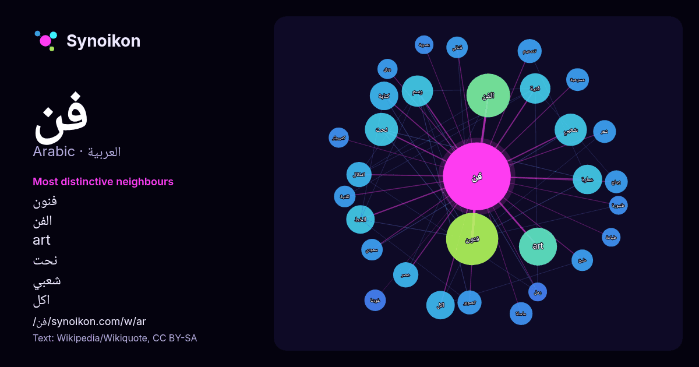

العربية · كلمة شائعة
فن
“art” · الكلمات الموجودة حولها في 600 ورودًا من ويكيبيديا, Wikiquote.

الجيران الأكثر تميّزًا
- فنون 31×
- الفن 26×
- art 26×
- نحت 18×
- شعبي 15×
- اكل 14×
- رسم 14×
- عمارة 13×
- الخط 12×
- فنية 12×
- ماساة 9.8×
- كتابة 9.6×
- زجاج 9.1×
- غوبتا 9.0×
- قتالي 8.9×
- طبخ 8.7×
- اشكال 8.1×
- مسرحية 7.4×
- تصوير 7.3×
- ورق 7.2×
× = كم مرة أكثر مما في نصوص ويكيبيديا العامة.
الجيران الأكثر تكرارًا
- فنون 47
- الفن 33
- art 25
- نحت 19
- شعبي 18
- رسم 17
- فنية 16
- عمارة 15
- كتاب 15
- اكل 14
- الخط 14
- كتابة 14
- اشكال 11
- عالم 11
- عربي 11
- عصر 11
- تصميم 10
- تصوير 10
- تاريخ 9
- زجاج 9
في السياق
- فن أسكي تعديل - تعديل مصدري - تعديل ويكي بيانات إن فن أسكي تقنية فنية، تتشكل فيها صورة بواسطة مجموعة من حروف أسكي. استريوجرام أسكي شركة إن سي دي [1] نسخة Wikipedia snippets · فن أسكي
- فن المحبة أو فن الحب هو كتاب صدر عام 1956 للمحلل النفسي والفيلسوف الاجتماعي إريك فروم. نشر في الأصل كجزء من سلسلة وجهات نظر العالم التي حررتها روث ناندا Wikipedia snippets · فن المحبة
- متعلّقة بعنوان فن. إذا وصلت لهذه الصفحة عبر وصلة داخليّة، فضلا غيّر تلك الوصلة لتقود مباشرة إلى المقالة المعنيّة. الفن قد يشير ل: فن (فرقة موسيقية): Wikipedia snippets · فن (توضيح)
- فن اللدائن أو الفنون البلاستيكية هي ممارساتٌ وأنشطة تمثل وتجسد الفنون والجماليات من خلال الأشكال والأحجام. فبين فن اللدائن والفن المرئي فرق طفيف قد يدفع Wikipedia snippets · فن اللدائن
- . فن البكسل (الإنجليزية: Pixel art) هو أحد أقسام الفن الرقمي الرسومي الحديث، أُسّس خلال استخدام برمجيات رسوميات الرستر، حيث يتم تعديل أو رسم الصورة في Wikipedia snippets · فن البكسل
- فن الزجاج هو فن حديث يعنى بإنتاج أعمال فنية، كبيرة، تنتج لمرة واحدة لاغير وهي مصنوعة كليا أو جزئياً من الزجاج. وهو يختلف عن أعمال (الزجاج الفني) أو نحت Wikipedia snippets · فن الزجاج
- الترديد أو فن الرواديد (ويُعرف في العالم الإسلامي غير العربي باسم فن المدح) هو الفن الذي يقوم على وجود منشد ديني إسلامي شيعي يعمل عادة في الحسينيات وأماكن Wikipedia snippets · رادود (فن)
- فن الحرب هو مسلسل تلفزيوني مصري عُرض خلال رمضان 2026، المسلسل من تأليف عمرو سمير عاطف ،وسيناريو وحوار خالد أبو بكر، ويشارك في بطولته يوسف الشريف وشيري Wikipedia snippets · فن الحرب (مسلسل)
كلمات أخرى
- أغنية
- إله
- تاريخ
- جبل
- جرس
- جزيرة
- جسر
- حديقة
- حصان
- حقيقة
- حياة
- خبز
- خريطة
- خريف
- ذهب
- زمن
- ساعة
- شاي
- شتاء
- صحة
- صحراء
- صمت
- صيف
- طبيعة
- طريق
- طعام
- ظل
- عائلة
- عاصفة
- عسل
- علم
- عمل
- غابة
- قطار
- قطة
- قلب
- قوة
- كلب
- لغة
- ماء
- مال
- مدينة
- مرآة
- مطر
- ملح
- مناخ
- موت
- نجم
- والدة
حُسبت مسبقًا في 2026-10-09 بالإعدادات الافتراضية (±5 كلمات، مدوّنة متوسطة). يمكن للخريطة التفاعلية تحديثها ببيانات حية.
واجهة مترجمة آليًا؛ نرحب بالتصحيحات.